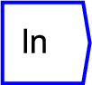
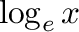
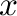

Next: sin
Up: Functions/Unary Operators
Previous: exp
Contents

Produces a natural logarithm of the input, to
the base of e. This takes the equation  where  is
the input.
The operator can be placed on the canvas in two ways:
- From the Functions (``function'') toolbar; or
- By typing the letters ``ln'' on the canvas and then pressing the Enter
key.